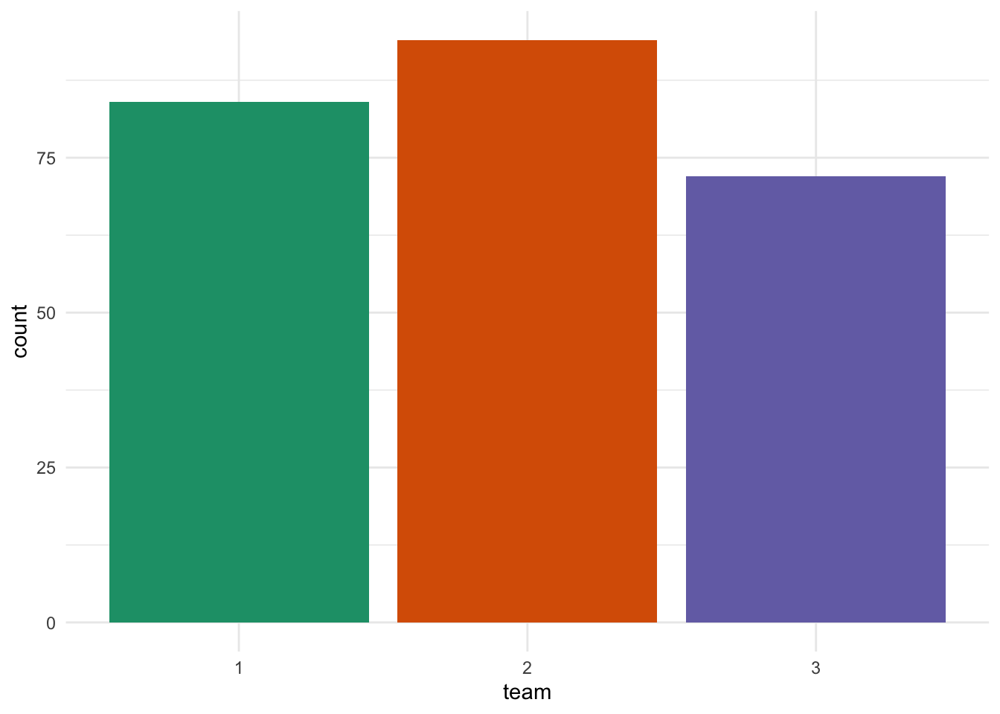
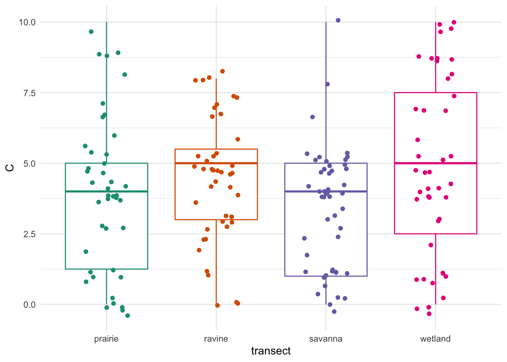
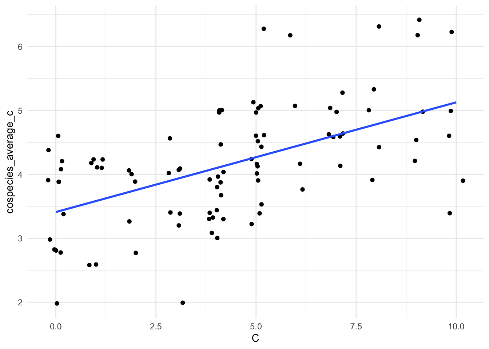
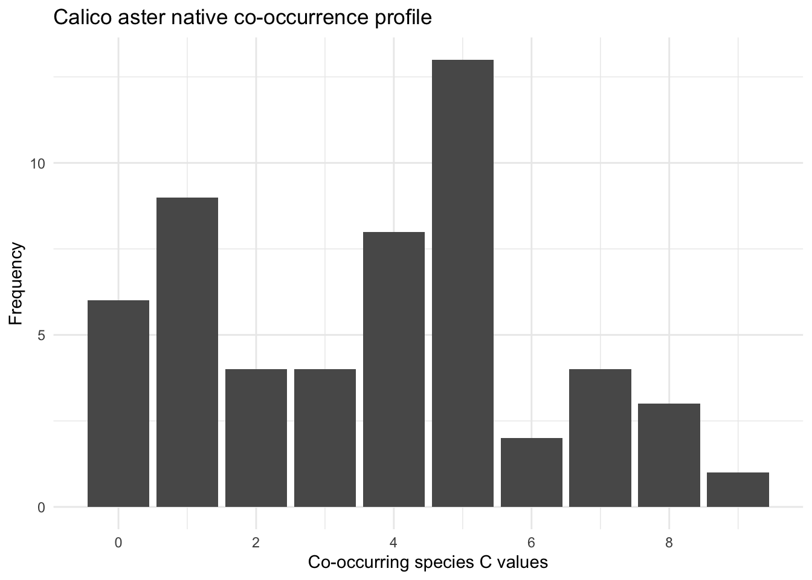
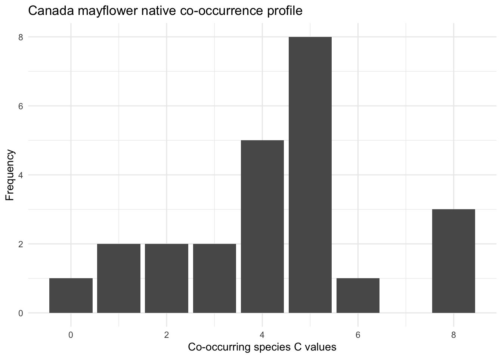
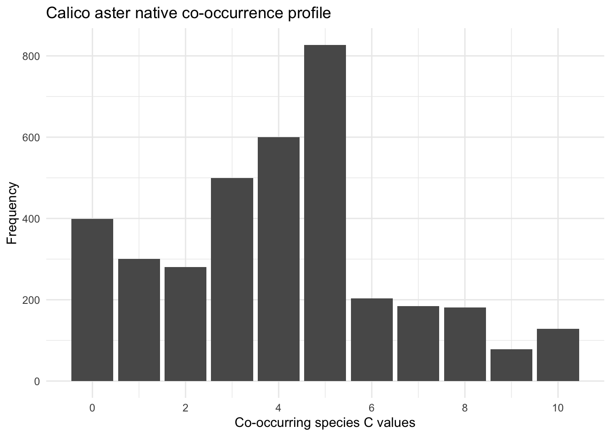

| species_name | C | total_quadrats_found |
|---|---|---|
| acer rubrum | 5 | 1 |
| acer saccharum | 1 | 1 |
| acer saccharum | 5 | 1 |
| ageratina altissima | 3 | 2 |
| agrimonia gryposepala | 2 | 4 |
| agrimonia sp. | NA | 1 |
| allium cernuum | 7 | 1 |
| amorpha fruticosa | 5 | 1 |
| amphicarpaea bracteata | 5 | 2 |
| anemone quinquefolia | 7 | 1 |
LFC 2022 floristic quality analysis
Species inventory
Over 100 species were observed, in total. The first few are shown below, while the full inventory can be found in the file species.csv. Disclaimer: while this data frame include 134 rows (species), some of these are duplicates due to spelling errors.
The breakdown by teams was relatively uniform.
# A tibble: 3 × 2
team n
<fct> <int>
1 1 84
2 2 94
3 3 72
Chi-squared test for given probabilities
data: c(84, 94, 72)
X-squared = 2.912, df = 2, p-value = 0.2332The p-value of .23 indicates that differences between teams could eaasily be attributed to random chance.
Transect comparison
The wetland showed both the greatest richness (total number of species observed) and highest native mean-C.
# A tibble: 4 × 4
transect species_count mean_c sd_c
<chr> <int> <dbl> <dbl>
1 wetland 46 4.91 3.22
2 prairie 44 4 2.78
3 ravine 40 4.44 2.24
4 savanna 38 3.39 2.21The simplicity of this table of numerical summaries is both beautiful and dangerous. A complicated data set like this just can’t be reduced to 12-number summary without significant information loss. A picture is a step in the right direction.

Co-occurrence of native species.
Perhaps we can learn something about individual plant species by looking at the C-values of the species they’re co-located with, that is, the ones nearby them. For each species, I computed the average C-value of native plants found in quadrats where they were located. The first few rows are shown below. The entire data set is contained in the colocation.csv file.
| species_name | C | cospecies_average_c | cooccurrences | discrepancy |
|---|---|---|---|---|
| acer rubrum | 5 | 4.6 | 12 | 0.4 |
| acer saccharum | 1 | 2.6 | 8 | -1.6 |
| acer saccharum | 5 | 5.1 | 9 | -0.1 |
| ageratina altissima | 3 | 4.1 | 15 | -1.1 |
| agrimonia gryposepala | 2 | 3.9 | 40 | -1.9 |
| agrimonia sp. | NA | 2.0 | 3 | NA |
| allium cernuum | 7 | 5.0 | 11 | 2.0 |
| amorpha fruticosa | 5 | 5.0 | 3 | 0.0 |
| amphicarpaea bracteata | 5 | 4.0 | 20 | 1.0 |
| anemone quinquefolia | 7 | 4.6 | 12 | 2.4 |
As you’d expect, there is a moderately strong correlation (0.54) between a plant’s C-value and the average C-values of those species found nearby.

Species profiles
For each species, a profile of co-located C-values can be constructed. The calico aster (symphyotrichum lateriflorum, C=4), for instance, breaks down as follows:

The profile of the Canada mayflower (maianthemum canadense, C=7) is somewhat different:

Our sample is very small and specific to our hyper-local environment. Can this idea be scaled up?
The Chicago database
The website www.universalfqa.org includes hundreds of public floristic quality assessments in standardized format. I downloaded all of the ones that used the most up-to-date database for the Chicagoland area and have begun a co-occurrence analysis. There are over 2.4 million co-occurrences in this set; the full data set is not included, but a summary (chicago_cooccurrences_summary.csv) is. The first few rows of this are:
| target_species | target_species_c | cospecies_n | cospecies_native_n | cospecies_mean_c | cospecies_native_mean_c | cospecies_std_dev_c | cospecies_native_std_dev_c | percent_native | percent_nonnative | percent_native_low_c | percent_native_med_c | percent_native_high_c | discrepancy_c |
|---|---|---|---|---|---|---|---|---|---|---|---|---|---|
| Abutilon theophrasti | 0 | 3058 | 2051 | 2.404186 | 3.584593 | 2.817443 | 2.757524 | 0.6706998 | 0.3293002 | 0.6572923 | 0.2622629 | 0.0804447 | -3.5845929 |
| Acalypha gracilens | 4 | 168 | 108 | 2.154762 | 3.351852 | 2.497875 | 2.384980 | 0.6428571 | 0.3571429 | 0.6785714 | 0.2916667 | 0.0297619 | 0.6481481 |
| Acalypha rhomboidea | 0 | 3152 | 2067 | 2.367068 | 3.609579 | 2.887519 | 2.868692 | 0.6557741 | 0.3442259 | 0.6719543 | 0.2350888 | 0.0929569 | -3.6095791 |
| Acaulon muticum | 2 | 202 | 132 | 2.504951 | 3.833333 | 2.369473 | 1.866403 | 0.6534653 | 0.3465347 | 0.6336634 | 0.3465347 | 0.0198020 | -1.8333333 |
| Acer campestre | 0 | 21 | 13 | 2.952381 | 4.769231 | 3.513918 | 3.345491 | 0.6190476 | 0.3809524 | 0.6190476 | 0.1904762 | 0.1904762 | -4.7692308 |
| Acer ginnala | 0 | 618 | 471 | 3.718447 | 4.878981 | 3.301934 | 2.939135 | 0.7621359 | 0.2378641 | 0.4822006 | 0.3365696 | 0.1812298 | -4.8789809 |
| Acer negundo | 0 | 6286 | 4194 | 2.388641 | 3.580114 | 2.741169 | 2.645056 | 0.6671969 | 0.3328031 | 0.6559020 | 0.2737830 | 0.0703150 | -3.5801144 |
| Acer nigrum | 5 | 379 | 311 | 4.224274 | 5.147910 | 3.185589 | 2.757509 | 0.8205805 | 0.1794195 | 0.3931398 | 0.3957784 | 0.2110818 | -0.1479100 |
| Acer platanoides | 0 | 1912 | 1337 | 2.702406 | 3.864622 | 2.687809 | 2.416339 | 0.6992678 | 0.3007322 | 0.5998954 | 0.3399582 | 0.0601464 | -3.8646223 |
| Acer pseudoplatanus | 0 | 465 | 331 | 2.937634 | 4.126888 | 2.448254 | 1.872181 | 0.7118280 | 0.2881720 | 0.5591398 | 0.4107527 | 0.0301075 | -4.1268882 |
The species profile for the calico aster is:

A few sample questions that a complete co-occurrence analysis might address:
Some species show high discrepancy, co-occuring predominately with species of very different C-values. How might such species be re-classified?
Are some species more informative than others?
Would it be useful to assign non-native plants C-values on the basis of co-occurring C’s?
Suppose we used an algorithm to assign new C values on the basis of co-occurrence. What might the output look like? How would those values fare when applied to existing floristic quality assessments?